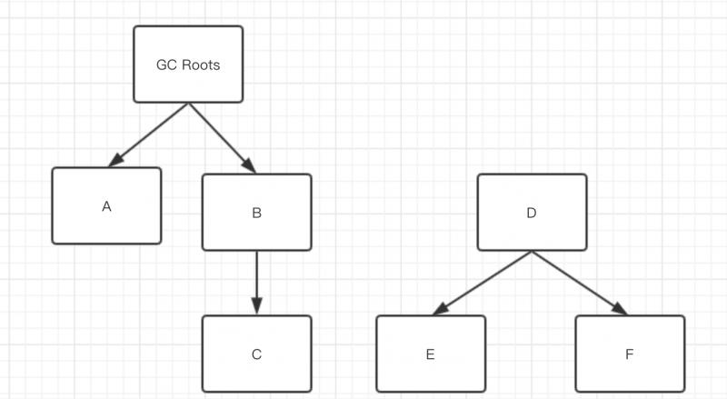
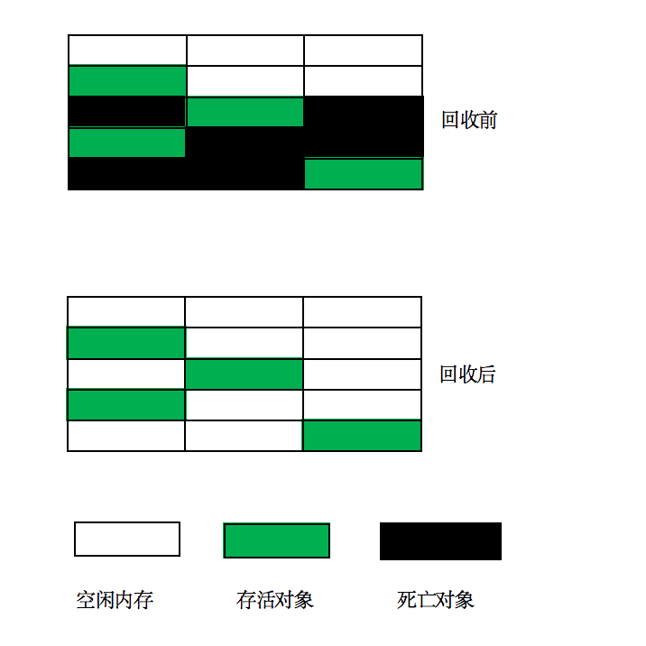
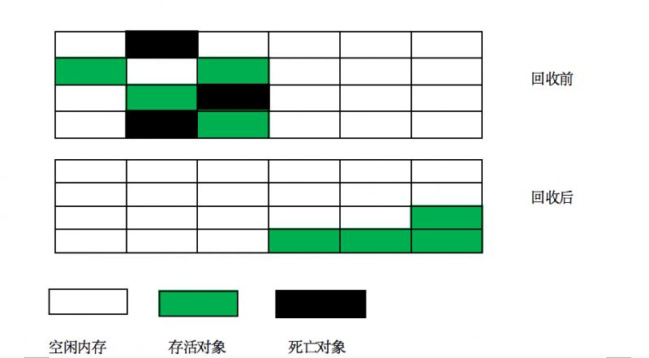
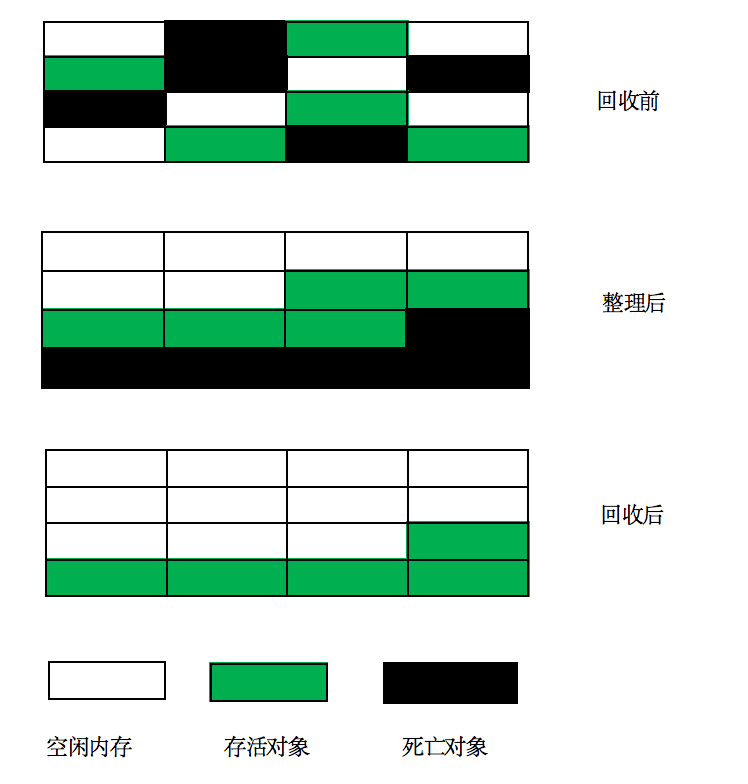
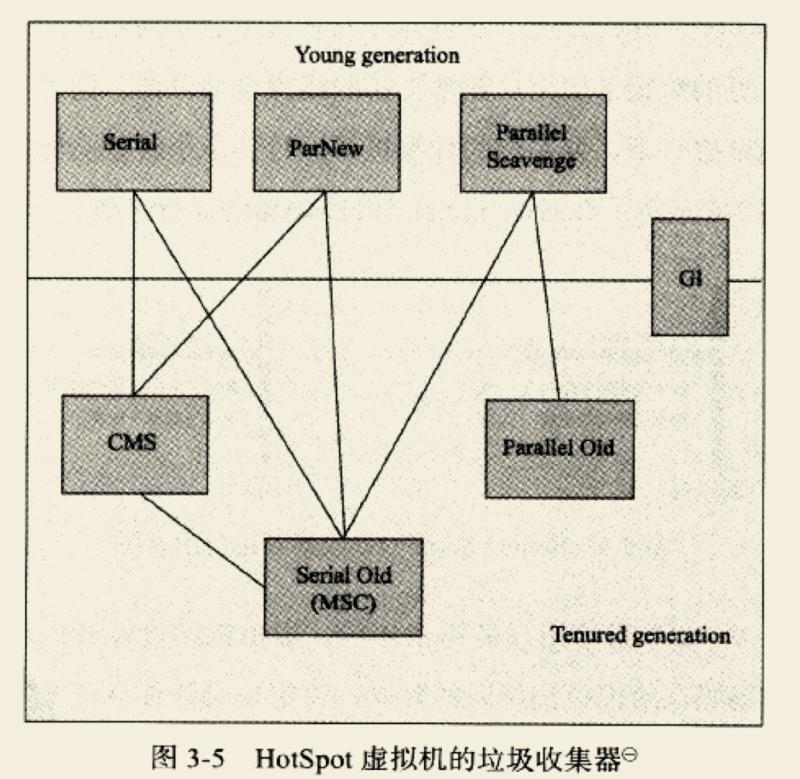
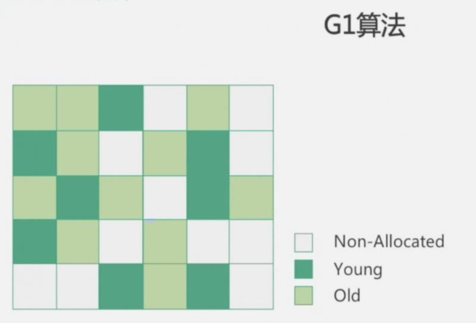
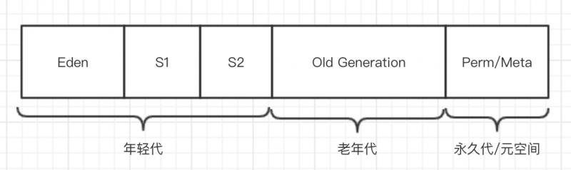

原文连接:https://www.cnblogs.com/bailiyi/p/12013756.html
第一部分：面试题
本次分享我们将尝试回答以下问题：
- GC 是什么? 为什么要有 GC?
- 简单说一下java的垃圾回收机制。
- JVM的常见垃圾回收算法有哪些？
- 为什么要使用分代回收机制？
- 如何判断一个对象是否存活?
- 如果对象的引用被置为 null，垃圾收集器是否会立即释放对象占用的内存?
第二部分：深入原理
好，让我们开始吧。还是那句话，如果时间不够可以直接拉到最后看答案。
java垃圾回收的知识点虽然看起来难，但知识点非常集中，而且很好理解。不信？不信就往下看吧。
1. 所谓GC
GC就是垃圾收集的意思（Gabage Collection）。
我们在开发中会创建很多对象，这些对象一股脑的都扔进了堆里（还记得jvm内存模型吗？不记得的话翻翻前面的文章），如果这些对象只增加不减少，那么堆空间很快就会被耗尽。所以我们需要把一些没用的对象清理掉。
2.对象已死吗
垃圾回收，就是要把那些不再使用的对象找出来然后清理掉，释放其占用的内存空间。
判断一个对象是否还在使用，用咱们java圈子的行话讲，就是判断对象是否死亡（反之就是存活）。
在java中判断对象死亡有两种方式：
- 引用计数法
- 可达性分析法
下面我们详细讲讲
2.1 引用计数法
引用计数法的思想十分朴素，它的做法是给对象添加一个引用计数器，每当有一个地方引用该对象，这个计数器就加1。当引用失效时，计数器就减1。如果计数器为0了，说明该对象不再被引用，成为死亡对象。
不过这种算法有一个致命缺点，就是无法处理对象相互引用的情况。
你看，假如有A、B两个对象，它们互相引用，那么对象中的引用计数器会始终大于0。
所以这种算法已经没人用了。
2.2 可达性分析法
2.2.1 什么是可达性
可达性分析法就是目前的主流算法，也是java正在使用的算法。
它的做法是，通过一系列被称为“GC Roots”的对象作为起点，从这些起点开始往下搜索，搜索所走过的路径称为引用链（Reference Chain）。当一个对象没有和任何引用链相连，即称为该对象不可达（图论的说法），认为该对象死亡。
来看下面这张图：

上图中A、B、C都跟GC Roots有直接或间接的引用关系，所以是存活对象。而D、E、F虽然相互之间有引用，但是和GC Roots并无引用关系，所以是死亡对象。
2.2.2 哪些对象可作为GC Roots
有四类对象可作为可达性分析的GC Roots
- 栈（栈帧中的本地变量表）中引用的对象
- 方法区中类静态属性引用的对象
- 方法区中常量引用的对象
- 本地方法栈中JNI引用的对象
总而言之，GC Roots是所有Java线程中处于活跃状态的栈帧,静态引用等指向GC堆里的对象的引用。换句话说，就是当前所有正在被调用的方法的引用类型的参数/局部变量/临时值。
2.3 所谓引用
对象是否死亡，关键就在于引用。在java中，引用其实有四种：强引用、软引用、弱引用、虚引用。
强引用
强引用就是我们日常开发中最常见的引用，例如
String str = new String("hello");只要强引用还在，对象就不会被回收。
软引用
软引用需要专门声明，例如
SoftReference<String> str = new SoftReference<String>("hello");被软引用关联的对象在内存不足时会被回收。
这个特性特别适合用来做缓存。
弱引用
弱引用也需要专门声明，例如
WeakReference<String> str = new WeakReference<String>("hello");被弱引用关联的对象每次GC时都会被回收。
弱引用最常见的用途是实现可自动清理的集合或者队列。
虚引用
虚引用是最弱的引用，需要用PhantomReference来声明，例如
PhantomReference<String> phantom = new PhantomReference<>(new String("hello"), new ReferenceQueue<>());它完全不会影响对象的生存时间，唯一的作用是在对象被回收时发一个系统通知。
2.4 起死回生
对象在被判定为死亡后，并不会立刻被回收，而是要经过一个过程才会被回收。在这个回收过程中，死亡对象还有可能活过来，是不是很神奇？
来看图：

上图是对象被回收的过程。一个对象要被回收，至少要经过两次标记。
如果对象在第二次标记之前重新连接上GC Roots，那么它将在第二次标记中被移出回收队列，从而复活。
还有一点需要注意的是，Finalizer线程是一个由虚拟机自动建立，且低优先级的线程。该线程触发对象的finalize()方法之后，并不会阻塞等待方法执行结束。这样做是为了防止回收队列被阻塞。
finalize()是Object中的方法，当垃圾回收器将要回收对象所占内存之前被调用的方法。有些教材推荐用该方法来做“关闭外部资源”之类的工作，但是实际上该方法运行代价高昂，且不确定性很大，所以并不推荐使用。真要关闭外部资源，还不如用try-finally来处理。
3.方法区的回收
方法区不在堆内，会被垃圾回收吗？
在jdk1.7中，方法区在永久代，而永久代本身就是垃圾回收概念下的产物，full gc时就会对方法区回收。
到了jdk1.8，虽然永久代被取消，但是新增了MaxMetaspaceSize参数，对于将死的类及类加载器的垃圾回收将在元数据使用达到“MaxMetaspaceSize”参数的设定值时进行。
所以，方法区会被回收。
4.垃圾回收算法
这一节我们来看下流行的垃圾回收算法，只说思想，不涉及实现细节。
我们需要了解的垃圾回收算法有以下几种：
- 标记-清除算法
- 复制算法
- 标记-整理算法
- 分代回收算法
咱们一个个来看下。
4.1 标记-清除算法
标记-清除算是最基本的回收算法了。它的思想就是先标记，再清除。标记过程如2.4节所述，有两次标记。
它的主要缺点有两个：
- 效率不高
- 会产生大量内存碎片
内存碎片是指内存的空间比较零碎，缺少大段的连续空间。这样假如突然来了一个大对象，会找不到足够大的连续空间来存放，于是不得不再触发一次gc。

4.2 复制算法
复制算法的思想是，把内存分成两块，假设分成A、B两个区域吧。
每次对象过来之后，都放到A区域里，当A区域满了之后，把存活的对象复制到B区域，然后清空A区域。
接下来的对象就全部放到B区域，等B区域满了，就把存活对象复制到A区域，然后清空B区域。
就这样来回倒腾，完成垃圾回收。
优点是不会有空间碎片，缺点是每次只用得到一半内存。
缺点是在对象存活率较高的场景下（比如老年代那样的环境），需要复制的东西太多，效率会下降。

4.3 标记-整理算法
标记-整理算法中的“标记”阶段和“标记-清理”中的标记一样。不同的是，死亡对象并不会直接清理，而是把他们在内存中都移动到一起，然后一起清理。

4.4 分代收集算法
分代收集算法其实没什么新东西，只是把对象按存活率分块，然后选用合适的收集算法。
java中使用的就是分代收集算法。
存活率低的对象放在一起，称为年轻代，使用复制算法来收集。
存活率高的对象放在一起，称为老年代，使用标记-清除或者标记-整理算法。
5. HotSpot的枚举GC Roots
前面我们说到了对象的可达性分析需要从GC Roots开始计算引用链。
然而可作为GC Roots的对象非常多，一个个来计算将非常耗时。
而且在进行这项工作时，虚拟机必须停下来，就像时间停止那样（Sun称之为Stop The World，哈哈，是不是很酷），以此保证分析结果的准确性。
我们的程序，特别是网站应用，基本是上是一刻不停的在运行的。如果出现长时间的停止，基本上是不可接受的。为了解决这个问题，各个虚拟机都采取了一些措施，尽量减少停顿时间（是的，只能减少，停顿是不可能消除的）。
我们来看看现在最流行的Hotspot虚拟机是怎么处理的。（还记得啥是HotSpot不？翻翻前几篇文章）
5.1 OopMap
在HotSpot中，虚拟机把对象内的什么偏移量上是什么类型的数据的信息存在到一个叫做“OopMap”的数据结构中。这样在计算引用链时直接查OopMap即可，不用到整个内存中去挨个找了，由此提高了分析速度。
5.2 安全点
然而，程序中的引用关系时时刻刻都在变化，如果每次变化都要记录到OopMap中，也是一项很大的负担。所以，只有在程序执行到了特定的位置，才会去记录到OopMap中。
这个“特定的位置”，就叫安全点。
这里面还有个问题，就是如何保证在GC发生时，让所有的线程正好到达安全点。
有两种方式：
抢先式中断（已经没人用了）
抢先式中断的思路是，先把所有线程中断，如果有线程没有跑到安全点上，就恢复该线程，让它跑到安全点。
主动式中断
主动式中断的做法是，设置一个中断标志，这个标志和安全点是重合的。让各个线程去轮询这个标志，发现需要中断时，线程就自己中断挂起。
5.3 安全区域
虽然安全点已经完美解决了如何保证在GC发生时，让所有的线程正好到达安全点的问题。
但是有一些情况下，线程失去了行为能力，比如线程处于sleep或者blocked状态。这个时候线程无法去响应JVM的中断请求，而JVM显然也不肯能一直等待某几个线程。该怎么办呢？
这种情况就需要“安全区域”来解决。
安全区域是指在一段代码片段中，引用关系不会发生变化，这个区域中任意地方开始GC都是安全的。
6.垃圾收集器
前面咱们说的都是垃圾收集的方法和思路，垃圾收集器则是具体的实现。
先来看下hotSpot中垃圾收集器的总图（到jdk1.8）

6.1 并行和并发
在开始讲解之前，我们先了解一下什么是并行和并发。
并行：垃圾收集器是多线程同时工作的，但是用户线程仍然处于等待状态。
并发：用户线程和垃圾收集器线程同时执行（也有可能是交替执行）。
下面咱们说说几个常用的使用方案
6.1 jdk1.8默认垃圾收集器
查看当前使用的垃圾收集器可以使用以下命令：
~ java -XX:+PrintCommandLineFlags -version然后会看到以下内容：
-XX:InitialHeapSize=134217728 -XX:MaxHeapSize=2147483648 -XX:+PrintCommandLineFlags -XX:+UseCompressedClassPointers -XX:+UseCompressedOops -XX:+UseParallelGC
java version "1.8.0_151"
Java(TM) SE Runtime Environment (build 1.8.0_151-b12)
Java HotSpot(TM) 64-Bit Server VM (build 25.151-b12, mixed mode)可见jdk1.8默认工作在Server模式下，默认使用ParallelGC垃圾收集器。
如果要看更详细的信息，还可以使用以下命令：
java -XX:+PrintFlagsFinal -version | grep GC这个命令打印的内容有点多，我们主要找值为true的信息。默认情况会有以下两行：
bool UseParallelGC := true
bool UseParallelOldGC = true 6.1.1 Parallel Scavenge收集器
从上面的总图能看到，这是一个工作在年轻代的收集器，使用复制算法，是一个并行的多线程收集器。
它的目标是达到一个可控制的吞吐量。所谓吞吐量就是CPU用于运行用户代码的时间与CPU总消耗时间的比值。比如虚拟机总共运行了100分钟，其中垃圾收集花了1分钟，那吞吐量就是99%。
6.1.2 Parallel Old收集器
Parallel Old是一个工作在老年代的收集器，使用“标记-整理”算法。也是一个关注吞吐量的垃圾收集器。
6.2 web应用垃圾收集器方案
ParallelGC组合重视的是吞吐量，非常适合在后台运算而不需要太多交互的场景。
对于需要大量交互的应用，比如web应用，则需要更短的停顿时间。
所以大多数web应用使用的是ParNew+CMS收集器方案。
6.2.1 ParNew收集器
parNew也是一个工作在年轻代的收集器，也使用复制算法，也是一个并行的多线程收集器。
为什么我要使用这么多“也”……
好吧，parNew看起来和Parallel Scavenge一模一样，但其实他们还是有区别的。
parNew是一个重视停顿时间收集器。
不过它最大的特点是：可以和CMS收集器组队工作。
Parallel Scavenge就不行…...
6.2.2 CMS收集器
CMS是一款十分优秀的老年代垃圾收集器，响应速度快、停顿时间短，是现在大多数互联网公司的选择，大家要好好掌握。
CMS使用“标记-清除”算法，分为4个步骤：
- 初始标记（STW）
- 并发标记
- 重新标记（STW）
- 并发清除
其中，初始标记很快，只是标记一下GC Roots能直接关联到的对象。
并发标记和重新标记要Stop The World，并发标记就是在标记死亡对象，重新标记是为了修正并发标记期间发生变动的那部分对象。
从耗时来看，并发标记>重新标记>初始标记。
并发清除和并发标记耗时最长，但收集器线程是和用户线程一起并发执行的，所以没有停顿。
CMS固然优秀，但也有一些缺点：
耗CPU资源
收集器线程和用户线程并发工作，所以收集时会抢占CPU资源
无法处理浮动垃圾
浮动垃圾是指在标记过程之后出现的垃圾。这部分垃圾在本次回收中无法处理，只能等下次。
产生碎片空间
使用“标记-清除”算法就会有这个问题。不过可以通过参数设置开启碎片整理，比如3次回收后就来一次带碎片整理的回收。
6.3 G1收集器
G1收集器是目前最新的垃圾收集器，到jdk1.7时达到可商用程度。
G1收集器可以同时hold住年轻代和老年代，不需要和别的收集器搭配使用。
G1收集器使用的也是分代算法，它的思路是，把内存空间分成一个个小格子，每个格子称为一个Region。如下图：

优先回收价值大的Region。
年轻代使用并发复制算法，有STW。
老年代回收步骤大致可以分为以下几个：
- 初始标记（STW）
- 并发标记
- 最终标记（STW）
- 筛选回收（STW）
目前JDK1.9已经默认使用G1收集器，但是在JDK1.8版本中G1收集器似乎还有不少问题，使用的还不多。
7.内存分配策略
终于要放出这张图了：

其实我在一开头就像放这张图，但是想着先讲点前置知识，没想到这一讲，就叫讲到这了…...
7.1 年轻代的策略
在年轻代分为三个区域，Eden区、Survivor1区、Survivor2区。有时候Survivor1区、Survivor2区又叫from区和to区。
对象优先分配到Eden区。Eden区要满的时候，会有一次复制回收，把存活的对象放到Survivor1区。
等Eden区再次要满的时候，又会有一次复制回收，把Eden区和Survivor1区的存活对象放到Survivor2区。
然后如此循环。
7.2 大对象的策略
虚拟机提供了一个-XX:PretenureSizeThreshold参数，大于这个参数的对象会直接进入老年代，防止年轻代发生大量内存复制。
7.3 晋升策略
年轻代的对象没熬过一次Minor GC，年龄就加一岁。默认15岁时，就会进入老年代。
不过这个条件并非绝对，如果Survivor中相同年龄的对象总和大于Survivor空间的一半，那么年龄大于等于该年龄的对象可以直接晋升到老年代。
7.4 空间分配担保
年轻代在Minor GC后会有对象进入老年代，在极端情况下，年轻代所有对象都存活并进入老年代。
所以在MinorGC之前，虚拟机会检查老年代的连续内存空间是否大于年轻代所有对象总和。
如果空间不够，那么这次MinorGC是有风险的。
如果允许冒险，Minor GC会直接执行，如果失败，会再发起一次full GC。
如果不允许冒险，则先执行一次full GC，再进行Minor GC。
第三部分：面试题答案
GC 是什么? 为什么要有 GC?
GC就是垃圾回收，释放掉没用的对象占用的空间，保证内存空间不被迅速耗尽。
简单说一下java的垃圾回收机制。
java采用分代回收，分为年轻代、老年代、永久代。年轻代又分为E区、S1区、S2区。
到jdk1.8，永久代被元空间取代了。
年轻代都使用复制算法，老年代的收集算法看具体用什么收集器。默认是PS收集器，采用标记-整理算法。
JVM的常见垃圾回收算法有哪些？
复制、标记清除、标记整理、分代回收
为什么要使用分代回收机制？
因为没有一种算法能适用所有场合。在对象存活率低的场景下，复制算法最合适。
对象存活率高时，标记清除或者标记整理算法最合适。
所以才需要分代来处理。
如何判断一个对象是否存活?
现在主流使用的都是可达性分析法。从GC Roots对象计算引用链，能链上的就是存活的。
如果对象的引用被置为 null，垃圾收集器是否会立即释放对象占用的内存?
不会。对象回收需要一个过程，这个过程中对象还能复活。而且垃圾回收具有不确定性，指不定什么时候开始回收。
引用文献
《深入理解Java虚拟机》
系列文章总目录：https://mp.weixin.qq.com/s/56JgXLArTAEDj1f3y4arLA